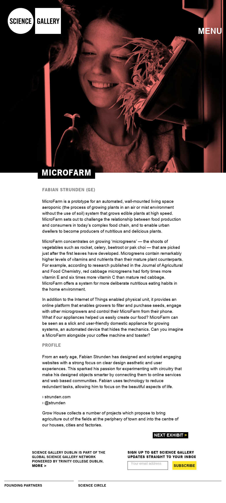

I was invited to present my degree work titled MicroFarm as part of the FieldTest exhibition in the Science Gallery Dublin. MicroFarm is a wall mounted aeroponic indoor growing unit for healthy eatable Microgreens and Salads. My degree project received funding from enterprise Ireland and is still being developed at the moment more details are available at www.microfarm.eu.
Exhibition Link: dublin.sciencegallery.com/fieldtest/exhibits/microfarm.html
